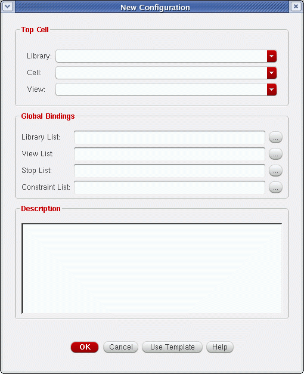
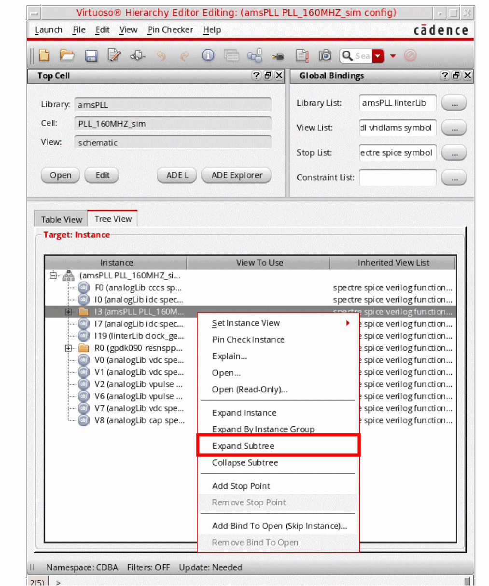
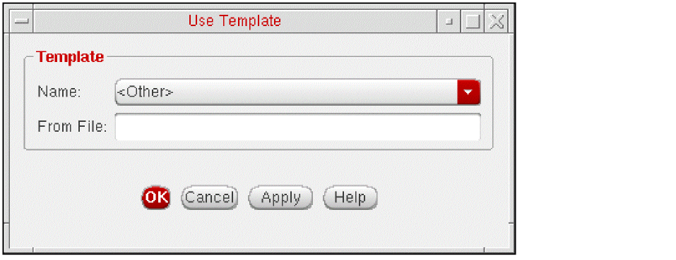
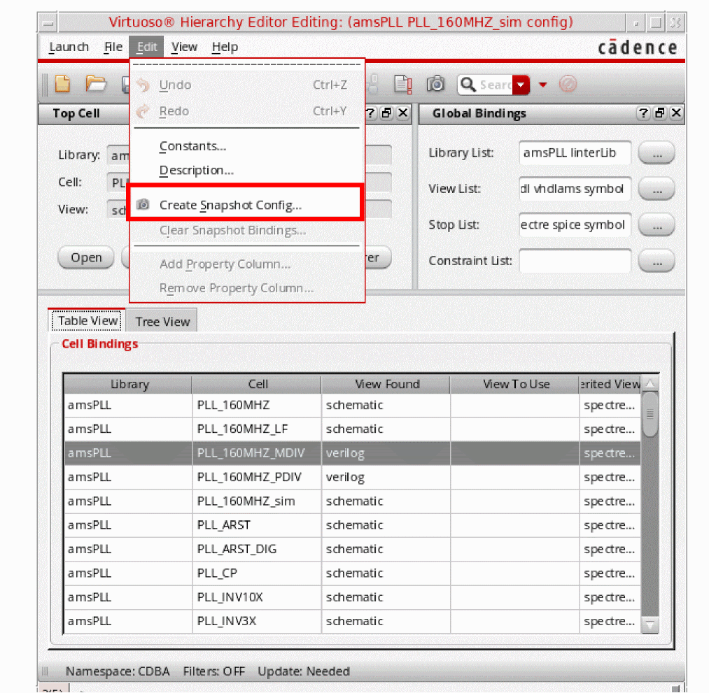
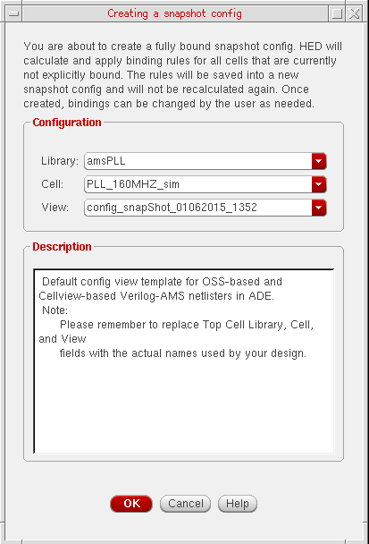
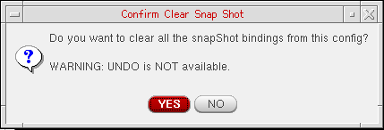

2
Creating Configurations
This chapter covers the following topics:
- About the Configuration View of a Design Hierarchy
- Creating a New Configuration
- Editing Configurations
- About Sub-Configurations
- Verifying Configuration Data
- Working with Templates
- Saving Configurations
- Comparing Configurations
- Using the Virtuoso Schematic Editor with the Hierarchy Editor
- About Snapshot Config
About the Configuration View of a Design Hierarchy
The configuration view of a design is the definition that the Hierarchy Editor understands and can open. It is a cellview that stores a configuration file that contains the libraries, cells, and views of a design. You can browse
- The library directory, which contains a collection of cells that correspond to a specific process technology
- The cell directory, which contains the design object that forms an individual building block of a chip or system
- The view, which is a defined representation of a cell such as layout or a schematic
The main components of a configuration are the top cellview, which is the root of the design and the configuration rules.
In the above example, the designLib library contains two configuration definitions identified by the view names mixedConfig and logicConfig. You can use the Hierarchy Editor to open the mixedConfig or the logicConfig configuration.
Opening Configurations
To open an existing configuration from the command-line when you start the Hierarchy Editor,
-
In a terminal window, type
You must specify all of the above options for the Hierarchy Editor to open a configuration and load the data. If you do not specify a cellview (that is, the library, cell, and view names), the Hierarchy Editor opens without loading a configuration.cdsHierEditor -liblibname-cellcellname-viewviewnameIf the Hierarchy Editor cannot open the configuration for editing—for example, if the configuration does not have edit permissions or if it is already locked by another process—it brings up a dialog box that asks if you want to open the configuration in read-only mode. Click Yes to open the configuration in read-only mode.
To open a configuration from the Hierarchy Editor,
The Open form appears.
-
In the Library field, select or type the name of the library that contains the design.
The drop-down list contains all the libraries that are defined in your library definition file (cds.lib) file. For more information about library definition files, see the Cadence Application Infrastructure User Guide. -
In the Cell field, select or type the name of the cell that contains the configuration view.
The drop-down list contains all the cells in the library you selected. -
In the View field, select or type the name of the configuration view.
The drop-down list only displays configuration views of the cell that you selected; it does not display any other views. -
Click OK.
The Hierarchy Editor opens the configuration.
You can use themaskLayoutStopLimitvariable in thehed.envfile to specify a size limit for maskLayout cellview databases. If a configuration includes such databases that are larger than the specified size limit, they will not be opened and will be shown as leaves with display stop point icons. These display stop points will not affect netlisting or simulation. For more information about thehed.envfile, see Appendix A, “The hed.env File.”If the Hierarchy Editor cannot open the configuration for editing—for example, if the configuration does not have edit permissions or if it is already locked by another process—it brings up a dialog box that asks if you want to open the configuration in read-only mode. Click Yes to open the configuration in read-only mode.
Opening Configurations in Read-Only Mode
To open a configuration in read-only mode from the Hierarchy Editor,
-
From the menu bar, choose File – Open (Read-Only).
The Open (Read-Only) form appears. - Refer to the steps in “Opening Configurations”.
About the Open Form
Library
lets you type or select the name of the library that contains the design. The drop-down list displays all the libraries that are specified in your cds.lib file.
Cell lets you type or select the name of the cell that contains the configuration view. The drop-down list displays all the cells in the library you selected.
View lets you type or select the name of the configuration view you want to open. The drop-down list contains all the configuration views that are in the cell you selected.
OK opens the configuration you selected and closes the form.
If the Hierarchy Editor cannot open the configuration for editing—for example, if the configuration does not have edit permissions or if it is already locked by another process—it brings up a dialog box that asks if you want to open the configuration in read-only mode. Click Yes to open the configuration in read-only mode.
Cancel cancels your selections and closes the form.
Creating a New Configuration
Use these steps to create and use a configuration with the Hierarchy Editor:
To create a new configuration,
-
Choose File – New Config or press
Control-n.
The New Configuration form appears.
 - In the Top Cell section, in the Library, Cell, and View fields, type or select the name of the library, cell, and view that you want to use as the top cellview of your design.
-
In the Global Bindings section, do one of the following:
-
In the Library List, View List, Stop List, and Constraint List fields, specify the default bindings for the entire design (see also Global Bindings Section)
The global library list is a list of libraries that determines the libraries from which each cell is obtained. The global view list is a list of views that determines which view is selected for each object in the design. The global stop list specifies a list of views that are to be treated as leaf nodes, that is, they are not to be expanded. The global constraint list is a list of constraint views that determines the constraints that apply to the design.
The Stop List and Constraint List fields are optional.
List the entries in each list in order of preference. Separate entries with spaces.
You can use constants in the view list and stop list. A constant is a symbolic name used to represent a set of views. For information on creating and using constants, see “Using Constants”.
You can use the asterisk character (*) as a wildcard in the view list; see “Using Wildcards in a View List” for more information. -
Click Use Template to select a template that is compatible with the simulator you are running. Templates for simulators provide lists of views that are most often used for those simulators.
Refer to “Working with Templates” to use predefined templates or to create your own templates.
-
In the Library List, View List, Stop List, and Constraint List fields, specify the default bindings for the entire design (see also Global Bindings Section)
- (Optional) In the Description field, type a brief statement describing the new configuration.
-
Click OK.
The New Configuration form closes. The Hierarchy Editor displays the new configuration.
See “Saving Configurations” for information about saving your new configuration.
About the New Configuration Form
Top Cell specifies the top cellview of the design.
Library lets you type or select the name of the library that contains the top cellview.
Cell lets you type or select the cell name of the top cellview.
View lets you type or select the view name of the top cellview.
Global Bindings specifies default bindings for the entire design.
Library List lets you specify libraries for cells that do not have fixed library bindings. List the libraries in the order you want them searched. Separate entries with spaces.
View List lets you specify the views you want in your configuration in order of preference. The view list applies to every level of the configuration and determines which view is selected for every object in the design, unless overridden by a cell or instance binding.
Separate entries with spaces. You can use constants in the view list; see “Using Constants” for more information. You can also use the asterisk character (*) as a wildcard in the view list; see “Using Wildcards in a View List” for more information.
Stop List lets you specify the views that are to be treated as leaf nodes, that is, they are not to be expanded. Separate entries with spaces. You can use constants in the stop list; see “Using Constants” for more information. This field can be empty.
Constraints List lets you specify a list of constraint views. The first view that is found is used. If none of the views in the list are found, the schematic editor will create a new view, of the same name as the first view in the list.
Description lets you enter a brief statement describing the configuration.
OK sets the values you entered and closes the form.
Cancel closes the New Configuration form without applying your values.
Use Template lets you select a template from a list of predefined templates. Refer to “Working with Templates” for more information.
Editing Configurations
This section provides an overview of how to edit a configuration. For a more detailed description on how to make changes and specify rules for configurations, see Chapter 3, “Changing Design Components.”.
To edit a configuration using the Hierarchy Editor,
- Open the configuration.
-
Edit any of the following:
- In the Top Cell section, you can change the top cellview of the configuration by editing the library name, cell name, or view name.
-
In the Global Bindings section, you can edit the library list, view list, stop list, and constraint list. Separate the entries in the lists with spaces.
You can use constants in the view list and stop list. A constant is a symbolic name used to represent a set of views. For information on creating and using constants, see “Using Constants”.
You can use the asterisk character (*) as a wildcard in the view list; see “Using Wildcards in a View List” for more information. - Edit the Cell Bindings and Instance Bindings sections.
-
Choose View – Update to see the results of your changes in the Cell Bindings or Instance Bindings tables.
If you selected the Automatic Update option in the Options form, this step is not required because your configuration is automatically updated. -
Click File – Save or press
Control-s.
Editing the Cell Bindings and Instance Bindings Tables
Changing Cell or Instance View Bindings
- In the Cell Bindings or Instance Bindings table, select the cell or instance you want to change.
-
Do one of the following:
-
Click in the View to Use column of the cell or instance, type the new view, then press
Return. - Right-click anywhere in the row of the cell or instance you want to change and select a view from the list of views in the pop-up menu.
The new view appears in the View to Use column in the color used to display user bindings. -
Click in the View to Use column of the cell or instance, type the new view, then press
-
Choose View – Update to see the results of your changes.
If you selected the Auto Update option in the Options form, this step is not required because your configuration is automatically updated. -
To save your changes, choose File – Save or press
Control-s.
Adding Views to Cell or Instance Bindings
- In the Cell Bindings or Instance Bindings table, click in the Inherited View List column and move the cursor to the end of the list.
-
Type the name of the view you want to use.
Separate entries with spaces. You can use constants in the view list; see “Using Constants” for more information. You can also use the asterisk character (*) as a wildcard in the view list; see “Using Wildcards in a View List” for more information. -
Press
Return.
The modified view list appears in the Inherited View List column in the color used to display user bindings. -
To view your changes, choose View – Update.
If you selected the Auto Update option in the Options form, this step is not required because your configuration is automatically updated. -
To save the changes, choose File – Save or press
Control-s.
Deleting Views from Cell or Instance Bindings
You can remove any views from the cell or instance bindings.
- In the Cell Bindings or Instance Bindings table, select the cell or instance you want to change.
-
In the Inherited View List column, double-click the view you want to remove.
The view is highlighted. -
Press
Delete. -
To view your changes, choose View – Update.
If you selected the Auto Update option in the Options form, this step is not required because your configuration is automatically updated. -
To save the changes, choose File – Save or press
Control-s.
Viewing Instances Contained by Other Instances
To see instances contained by other instances,
- Select the Tree View tab to display the tree view of the Hierarchy Editor.
-
Right-click the instance you want to browse.
A pop-up menu appears. -
Select Expand Instance.
The hierarchy below the instance is displayed.
Performing a Global Change on a Group of Instances
To perform a global view change on a group of instances, you can display all instances that share the same rules,
-
Choose View – Options.
The Options form appears. - Select the Tree tab.
- In the Expand Mode section, select By Instance Grouping.
- Click OK.
- Choose View – Tree to display the tree view of the configuration.
- Select the group of instances that you want to change.
- Edit the View to Use, Inherited View List, or Inherited LIbrary List column for the changes you want to make to the group of instances.
-
Press
Return.
The change you made is applied to all the instances and appears in the color used to display user bindings. -
To see the results of your changes, choose View – Update.
If you selected the Auto Update option in the Options form, this step is not required because your configuration is automatically updated. -
To save the changes, choose File – Save or press
Control-s.
View All Instances of a Subtree
To see all the instances of a subtree:
- Select the Tree View tab.
-
Right-click the instance you want to browse and select Expand Subtree from the context-sensitive menu.

The hierarchy below the instance is displayed.
Now, to close the hierarchy, right-click the instance and select Collapse Subtree from the context-sensitive menu.
About Sub-Configurations
A sub-configuration is a configuration that is used within another configuration. A sub-configuration is read-only within the configuration.
Cells contained in a sub-configuration are also displayed in the Cell Bindings table and are identified with an asterisk symbol in the Information column. The root cellview of the sub-configuration is identified with a brown pyramid in the Information column of the Cell Bindings table as well as in the Tree view.
You create a sub-configuration the way you create any other configuration (see “Creating a New Configuration” for more information).
You can then use the sub-configuration in your configuration in the same way that you use any other cellview.
To change the representation of a cell in your configuration to a sub-configuration
-
Set the view of the cell or its instance to the configuration view by doing one of the following:
- Specify the configuration view in the View to Use field of the cell or instance.
- Right-click the cell or instance and use the Set Cell View or Set Instance View command on the pop-up to select the configuration view.
The cell or instance is then identified as a sub-configuration within your configuration.
A sub-configuration is read-only—you cannot edit it from the configuration it is contained in.
Verifying Configuration Data
You can check the configuration data of your design in the following ways:
- Viewing the Description File
- Seeing what binding rules were used to select any view in the hierarchy. You can do this by
- Looking at the structure of the hierarchy using the table or the tree view.
Viewing the Description File
The Edit Description form appears.
Description displays the current description of the configuration, which you can edit.
OK applies the changes you made and closes the form.
Cancel cancels the changes you made and closes the form.
To edit the description of your configuration,
- In the Edit Description form, edit the description in the Description field.
-
Click OK.
The Hierarchy Editor saves the edited description.
Verifying Cell Binding Rules
To see which binding rules were used for a cell, do one of the following:
- In the Cell Bindings table, right-click a cellview and, from the pop-up menu, select Explain.
- In the Cell Bindings table, select a cellview and, on the toolbar, click the Explain icon.
The
About the Explain Form for a Selected Cell
Selection displays the master cellview for the selected cell.
Library specifies the master library of the selected cell.
Cell specifies the master cell of the selected cell.
View specifies the master view of the selected cell.
Instantiations lists all the instantiations of the cell. You can also open the parent cellview of the selected instance by clicking the Right Mouse Button and selecting Open Parent from the context-sensitive menu.
This option allows opening the parent cellview of the selected instance (out of context) or the selected occurrence in the context of the current configuration.
Explanation describes the bindings for the selected cell.
Verifying Instance Binding Rules
To see which binding rules were used for an instance, do one of the following:
- In the Instance Bindings table, right-click the instance whose rules you want to check and, from the pop-up menu, select Explain.
- In the Instance Bindings table, select the instance and, on the toolbar, click the Explain icon.
The
About the Explain Form for a Selected Instance
Selection displays the cellview that contains the selected instance
Library specifies the library of the cellview that contains the selected instance.
Cell specifies the cell of the cellview that contains the selected instance.
View specifies the view name of the cellview that contains the selected instance.
Instance specifies the name of the instance in the cellview that contains it.
Bound To displays the results of the rules that are used by the selected instance.
Library specifies the master library of the selected instance.
Cell specifies the master cell of the selected instance.
View specifies the master view of the selected instance.
**UNBOUND**, the instance has a bind-to-open attribute.Explanation describes the bindings for the selected instance.
Verifying Occurrence Binding Rules
To see which binding rules were used for an occurrence,
- Click the Tree View tab to display the tree view of the configuration.
- Right-click the occurrence whose rules you want to check.
- From the pop-up menu, select Explain.
The
About the Explain Form for a Selected Occurrence
Selection displays the cellview that contains the selected occurrence
Library specifies the library of the cellview that contains the selected occurrence.
Cell specifies the cell that contains the selected occurrence.
View specifies the view name of the cellview that contains the selected occurrence.
Instance specifies the name of the instance in the cellview that contains the occurrence.
Bound To displays the library, cell, and view to which the occurrence is bound.
Library specifies the library of the selected occurrence.
Cell specifies the cell of the selected occurrence.
View specifies the view of the selected occurrence.
**UNBOUND**, the occurrence has a bind-to-open attribute.Explanation describes the bindings for the selected occurrence.
Working with Templates
Templates let you build configurations using pre-defined view lists, library lists, and stop lists. The Hierarchy Editor includes templates for some simulators that are compatible with Cadence software. You can also create your own templates.
Templates are located using CSF (hierEditor/templates, in directories that have been defined in setup.loc, for example /hierEditor/templates/mytemplate.
If any templates are found in one of these locations, they will be displayed in the Name drop-down, without the need to specify a path.
Using Templates
-
Choose File – New Config or press
Control-n.
The New Configuration form appears. -
In the New Configuration form, click Use Template.
The Use Template form appears.
 -
Do one of the following:
-
If you want to use a pre-defined template, or a template that you have created and placed in the your_install_dir
/share/cdssetup/hierEditor/templatesdirectory, select the template from the Name listbox. -
If you want to use a template that is not in the your_install_dir
/share/cdssetup/hierEditor/templatesdirectory,
-
If you want to use a pre-defined template, or a template that you have created and placed in the your_install_dir
-
Click OK.
The Use Template form closes. The New Configuration form is filled in with the library list, view list, stop list, and constraint list data from the template. - In the Top Cell section, specify a top cellview for the new configuration.
-
Click OK.
The Hierarchy Editor displays the new configuration.
About the Use Template Form
Name
lets you select a template from a list of pre-defined templates for simulators that are compatible with Cadence software. The listbox also lists any other templates that you placed in the your_install_dir/share/cdssetup/hierEditor/templates/ directory. If you want to use a template that is not in this directory, select <Other> and specify the path in the From File field.
From File lets you type the path to the template you want to use.
OK applies your settings and closes the form. The information from the template you selected is displayed in the New Configuration form.
Cancel closes the form without applying your settings.
Apply sets your selections and leaves the form open.
Creating Templates
You can create your own template using your own view lists, library lists, stop lists, and constraints lists for your simulator or other design-specific requirements.
-
In the Hierarchy Editor, choose File – New Config or press
Control-n.If you have made changes to the current configuration, the Hierarchy Editor prompts you to save your changes.The New Configuration form appears. - In the Top Cell section, type the library, cell, and view name for the top cellview. These names are placeholders—you will replace them when you use the template.
-
In the Global Bindings section, specify the library list, view list, stop list, and constraints list.
Separate entries with spaces.
You can use constants in the view list and stop list; see “Using Constants” for more information. You can also use the asterisk character (*) as a wildcard in the view list; see “Using Wildcards in a View List” for more information. - (Optional) In the Description field, specify a brief description of the new template.
-
Click OK.
The New Configuration form closes.
The Hierarchy Editor displays the new configuration. -
Choose File – Save As.
The Save As form appears. -
In the Save As form, select or type the name of the library, cell, and view in which you want to save the new template.
-
Click OK.
The Save As form closes. - Open a terminal window.
- Create a directory in which you want to place your templates.
- Change directories to the /library/cell/view directory in which you saved the template.
-
Copy the configuration file in the directory (the
expand.cfgfile) to the directory you created. For example:cp expand.cfg
yourTemplatesDirectoryPath
When you use the new template, you will need to specify the path to the template (in the From File field of the Use Template form).
You can also copy your template to the location in which pre-defined Hierarchy Editor templates are stored.
Copying Your New Template to the Pre-defined Templates Location
You can copy the templates you create to the directory that contains pre-defined Hierarchy Editor templates and access them from the Use Template button on the New Configuration form.
- Change directories to the /library/cell/view directory in which you saved the template.
-
Copy the configuration file to the templates directory with the following command:
cp expand.cfg
your_install_dir/share/cdssetup/hierEditor/templates/yourtemplatename -
Restart the Hierarchy Editor.
Your new template is now available from the Use Template button on the New Configuration form.
Saving Configurations
When you save a configuration in the Hierarchy Editor, it is saved in the expand.cfg file in a expand.cfg% file, which is the previously-saved version of the expand.cfg file.
You can also save configurations in VHDL and Verilog®.
-file (-f) option).See the following topics for more information:
If you are a Virtuoso® Schematic Editor user, see
Saving a Configuration
The Hierarchy Editor saves the configuration.
To save a configuration using the File – Save As command,
The Save As form appears.
(For details about the Save As form, see “About the Save As Form”.)
- In the Library field, type or select the library in which you want to save the configuration.
- In the Cell field, type or select the cell in which you want to save the configuration.
-
In the View field, type the name of the new configuration view.
- Click OK.
About the Save As Form
Library lets you specify the name of the library in which you want to save a copy of the configuration.
Cell lets you specify the name of the cell in which you want to save the configuration.
View lets you specify the name of the new configuration view.
OK saves the configuration to the new name.
Cancel cancels your selections and closes the form.
Saving a Configuration as VHDL
The Hierarchy Editor provides the File – Save As VHDL command to save a configuration in VHDL syntax so that it can be read by VHDL tools. The VHDL configuration is always saved in a view called configuration.
The Hierarchy Editor adds those cellviews that have a VHDL source file to the VHDL configuration. It currently considers vhdl.vhd and vhdl.vams files as VHDL source files.
The Hierarchy Editor also adds those cellviews that do not have VHDL source files to the configuration but comments them out and generates a warning for them. However, if these cellviews have Verilog source files, you can choose to add them to the VHDL configuration by selecting the Check for Verilog option in the Save As VHDL form. If you select this option, the Hierarchy Editor adds the cellviews that do not have VHDL source files but do have Verilog source files to the VHDL configuration without commenting them out and does not generate a warning for them.
for/end statements for these views are not written out. To save a configuration for VHDL applications,
The Save As VHDL form appears.
-
In the Library and Cell fields, specify the name of the library and cell in which you want to save the VHDL configuration.
The View field is automatically set toconfiguration. -
Select the Check for Verilog option if you want those cellviews that do not have VHDL source files but do have Verilog source files to be added to the VHDL configuration.
If you do not select this option, the Hierarchy Editor adds all the cellviews that do not have VHDL source files to the VHDL configuration but comments them out and generates a warning for them. -
Click OK.
The VHDL configuration is saved. If the Hierarchy Editor generated any warnings while creating the VHDL configuration, it displays a dialog box asking you whether you want to see the warnings. If you click Yes, the Hierarchy Editor displays the following dialog box:
The Save as VHDL Warnings dialog box contains all the warnings that were generated while the VHDL configuration was created. For example, it displays a list of cells that are unbound and therefore not included in the configuration or a list of cellviews that do not have VHDL source files.
To save the warnings to a log file,
-
Click Write to Message Area.
The warnings are displayed in the Messages area and also saved to the log file.
About the Save As VHDL Form
Library lets you type or select the library in which you want to save the VHDL configuration.
Cell lets you type or select the cell in which you want to save the VHDL configuration.
View
is the configuration view. For VHDL configurations, the view name is always configuration.
Check for Verilog lets you add cellviews that do not have VHDL source files but do have Verilog source files to the VHDL configuration. Select this option if you want to add these cellviews to the VHDL configuration; deselect it if you do not want to add these cellviews to the VHDL configuration.
Cancel discards your selections and closes the form.
Saving a Configuration as Verilog
The Hierarchy Editor provides the File – Save As Verilog command to save a configuration to a file that can be used with the -file argument of Verilog applications such as xmvlog. The Verilog file can have any name, though it is typically called verilog.f.
The Hierarchy Editor adds a list of Verilog source files to the Verilog file.
For any cellview, if the cellview is a Verilog view (as defined by the master.tag file), then the Verilog source file specified in the master.tag is used. (If the library has a TMP directory associated with it, then the Hierarchy Editor looks for the source file in the temporary directory first, and then, if it is not found, looks for it in the master location.)
If the cellview is not a Verilog view (for example, if it is a schematic), then the Hierarchy Editor determines which Verilog source file to use. If the library has a TMP directory associated with it, the Hierarchy Editor first looks for source files in the temporary directory and then, if it does not find any, looks for them in the master location. If there are multiple source files, then the Hierarchy Editor selects the file according to the following order of precedence (highest to lowest):
verilog.vams
verilog.va
veriloga.va
verilog.v
To save a configuration for Verilog applications,
The Save As Verilog form appears.
The Verilog file is saved. If the Hierarchy Editor generated any warnings while creating the Verilog file, it displays a dialog box asking you whether you want to see the warnings. If you click Yes, the Hierarchy Editor displays the following dialog box:
The Save as Verilog Warnings dialog box contains all the warnings that were generated while the Verilog file was created. For example, it displays a list of cells that are unbound and therefore not included in the Verilog file or a list of cells that do not have Verilog source files.
To save the warnings to a log file,
-
Click Write to Message Area.
The warnings are displayed in the Messages area and also saved in the log file.
About the Save As Verilog Form
Look in lets you select the directory in which you want to save the configuration.
File
lets you specify a name for the Verilog file. The default name for the Verilog file is verilog.f.
Files of type lets you narrow the files that are displayed by choosing to display only certain types of files.
Save saves the Verilog file and closes the form.
Cancel closes the form without applying your selections.
Comparing Configurations
You can compare two configurations and highlight their differences by opening the resulting design hierarchy side-by-side in a tree view.
To perform the comparison, you specify two configurations that are to be compared and traverse through their hierarchies. The traversal results are saved in the traversal output files, which are then compared to highlight differences between them.
Perform the following step to compare configurations:
This form includes the following sections:
-
In the First Config section, specify the following fields:
- Library—Specify the library for the first configuration.
- Cell—Specify the cell.
- View—Specify the view.
-
Save traversal results to the specified file:—Select this checkbox if you want to specify an output file in which traversal results are saved. If you do not select this option, the traversal files are saved in the default traversal output directory named
configTraversals. The traversal files are saved with the following naming convention:
<lib>.<cell>.<view>
For example,tdmsDemoLib.ccadc.config
where,tdmsDemoLibis a library,ccadcis a cell, andconfigis a view. - Output file: Browse and select the output file in which you want to save the results. If the output file already exists, a warning message appears to confirm overwriting the file.
- Use existing traversal file as an input: Select this checkbox if you do not want to perform the traversal for the configuration and want to provide an existing traversal file as an input in the current comparison. When you select this option, all the above described options are disabled.
-
Input file—Browse and select the existing traversal file to be used for the comparison. You can directly provide the path to the output file in this field that is to be used as an input file in the comparison.
- In the Second Config section, provide the similar information as that of the first configuration.
-
In the Common Options section, specify the following fields:
-
Space Indentation—Specifies the number of spaces to be used for indentation. This help improve the readability of the output files.
Default value:
2Value range:1to8 - Expand Subconfigs—Select this check box if you also want HED to traverse through the subconfigurations found in the configuration. This field is not selected by default.
- Full traversal—Select this check box if you want to perform a full traversal, which means when a cell is instantiated several times, each instance of this cell is fully traversed and a tree view for each instance of this cell is written out to an output file. If you do not select this option, only the first visited instance of this cell is fully traversed. This field is selected by default.
-
Start diff tool—Specify a tool that you want to use to compare the traversal results. By default, the
tkdifftool is used for comparison.If you use an interactive terminal-based tool for comparison, such asvimdiff, you need to open the tool in a new terminal. For example,
xterm -e vimdiff -
Output directory—Browse and select an output directory in which the traversal results are saved. If you do not specify anything, the
configTraversaldirectory, which is present in the directory from where you launch HED, is used to save the traversal files.
-
Space Indentation—Specifies the number of spaces to be used for indentation. This help improve the readability of the output files.
Default value:
- Click OK to perform the comparison.
- Click Apply to set your selections and leaves the form open.
-
Click Defaults to populate the form fields with the default values from the
hed.envregistry file.
The comparison results are displayed in tkdiff as shown in the figure below:
The output is displayed in a text format in a graphical tree structure and differences are highlighted.
The traversal results for the same configuration can be different if you specify different values for the options. The options and their values are displayed in the traversal header as highlighted in the figure above.
Using Command-Line for Comparing Configurations
You can also use the command-line interface to traverse and compare two configurations.
The command used to specify the comparison details is as follows:
hedConfigCompare [-outdir <dir>] [-s <numspaces>] [-min] [-subcfg]
[-difftool <toolcmd>] [-cdslib <path>] <configSpec1> <configSpec2>
-
-outdir <dir>—Specifies a directory in which the traversal output files are saved. The default directory is./configTraversals. -
-s <numspace>—Specifies the number of spaces for indentation. The default value is 2 and the value ranges from 1 to 8. -
-min—Specifies the minimal traversal, which means traversing through hierarchy by avoiding revisits of the instances that have already been visited. -
-subcfg—Specifies whether the traversal results for subconfigurations are included in the output file. -
-difftool <toolcmd>—Specifies a tool to be used to display the compare traversal results. if this option is not specified,tkdiffis used to display the results. -
-cdslib <path>—Specifies the path from wherecdslibfile is to be loaded. If this file is not found, the command does not run. -
<configSpec1> and <configSpec2>—These commands are described as follows:
{lib.cell:config [-output <outputPath>]} | {<inputPath>}
-
lib.cell:config—Specifies an elaborated and traversed configuration view. -
-output <outputPath>—Specifies an output file in which the traversal results are saved. If the output file is not specified, the traversal results are saved in a file in the default output directory. -
inputPath—If you do not want to perform the traversal for the configuration to be compared, you can directly provide the path to the output file.
-
Examples
-
hedConfigCompare lib1.cell1:config1 lib2.cell2:config2
This command traverses both the configurations and save the traversal results in the following output files:
./configTraversals/lib1.cell1.config1
./configTraversals/lib2.cell2.config2
The command then compares these files. -
hedConfigCompare -outdir ./localFiles lib1.cell1:config1 ./localFiles/config2.trav
This command traverses only the first configuration and saves the results in default file in the specified output directory,./localFiles. The command then compares./localFiles/lib1.cell1.config1and ./localFiles/config2.trav. -
hedConfigCompare lib1.cell1:config1 -output ./localFiles/config1.trav ./localFiles/config2.trav
This command traverses only the first configuration,lib1.cell1:config1, and saves the traversal results in the specified output file,./localFiles/config1.travin the default output directory (configTraversals). This command then compares ./localFiles/config1.travand./localFiles/config2.trav. -
hedConfigCompare lib1.cell1:config1 -output ./localFiles/config1.trav lib2.cell2:config2 -output ./localFiles/config2.trav
This command traverses both the configurations and saves the results to the following files in the default output directory:
./localFiles/config1.trav
./localFiles/config2.trav
The command then compares these output files.
Traversing through Configurations
To traverse through a configuration and save the traversal results in an output file, do the following:
The Traverse Config form appears as shown in the figure below:
This form includes the following sections:
-
In the Config section, specify the following fields:
- Library—Specify the library for the first configuration.
- Cell—Specify the cell.
- View—Specify the view.
-
Save traversal results to the specified file:—Select this checkbox if you want to specify an output file in which traversal results are to be saved. If you do not select this option, the traversal files are saved in the default traversal output directory named
configTraversals. The traversal files are saved with the following naming convention:
<lib>.<cell>.<view>
For example,tdmsDemoLib.ccadc.config
where,tdmsDemoLibis a library,ccadcis a cell, andconfigis a view. - Output file: Browse and select the output file in which you want to save the results. If the output file already exists, a warning message appears to confirm overwriting to this file. This option is available only if you select the Save traversal results to the specified file checkbox.
- In the Common Options section, provide similar options as described in the Compare Config form.
- Click OK to perform the traversal.
-
Click Defaults to populate the form fields with the default values from the
hed.envregistration file.
If you save the traversal results into an output file that already has the traversal output, the following warning message appears:
Using Command-Line for Traversing Configurations
You can also use the command-line interface to traverse the configurations.
The command used to traverse through configuration is as follows:
hedConfigTraverse [-outdir <dir>] [-s <numspaces>] [-min] [-subcfg]
[-cdslib <path>] lib.cell:config [-output <outputPath>]
where, command options are similar to that of the compare traversal command options.
Using the Virtuoso Schematic Editor with the Hierarchy Editor
The Hierarchy Editor and the schematic editor can be kept synchronized when they are both started in the Virtuoso design environment. (See “Starting the Hierarchy Editor from the Virtuoso Design Environment”.)
When you change the configuration in the Hierarchy Editor, the changes are not reflected in the schematic automatically. To update the schematic, you need to do the following:
- In the Hierarchy Editor, save the configuration.
- In the Hierarchy Editor, choose View – Update to update the configuration.
The configuration is re-read from disk and the schematic displays your changes.
If you do not save the configuration after making your changes, the following form appears when you choose View – Update in the Hierarchy Editor:
The configuration is saved and the schematic is also updated.
When you change the schematic, the changes are reflected in the Hierarchy Editor when you update the configuration.
pc.db Files Update Process for Read-Only Libraries
The Hierarchy Editor (HED) follows the parent-child information of cellviews to traverse a design hierarchy. For text views, this information is found in their pc.db files. When the pc.db files became out-of-date with respect to the text design files, in IC releases prior to IC6.1.6 ISR12/ICADV12.1 ISR14, you needed to either make the RO library writable (undesirable and/or not permissible), or define a temporary (TMP attribute) location in cds.lib.
To simplify this model, a new automatic mechanism has been introduced that does not require you to intervene in the pc.db file update process. The pc.db file is automatically created and saved to the $CWD/.pcdb directory when HED detects that it is either missing or out-of-date. HED finds and reads the pc.db file from this cache location. The generated pc.db files are also copied to the library area, if the library is writable.
.pcdb directory by setting the following environment variable.
setenv PCDB_CACHE_DIR <writable directory>
If you are currently using explicit TMP location in cds.lib, the following sequence is followed:
-
HED reads the
pc.dbfiles from the cache location. -
If the
pc.dbfiles are not found in the cache location, HED reads thepc.dbfiles from the explicit TMP location. -
If the
pc.dbfiles are not found in the explicit TMP location, HED reads thepc.dbfiles from the library area.
cds.lib file is not recommended anymore for RO libraries.
If pc.db files are maintained as golden data in the RO libraries and explicit TMP is not being used in cds.lib, the new capability will make the whole flow —from configuration to netlist to simulation— to work automatically in the rare case when pc.db files become out-of-date.
pc.db file is out-of-date and cannot update this pc.db in a RO directory.About Snapshot Config
The Snapshot Config feature provides a way to freeze a certain config where all cells are explicitly bound in the whole design hierarchy. When this frozen config is reloaded, changes on a disk do not affect the binding when the library and view list are applied .
The Snapshot Config is served just like a generic config but with all the cells explicitly bound. It can be created, saved, edited, and loaded like a generic config. It is not supported in standalone HED.
Creating a Snapshot Config
To create Snapshot Config, you need to perform the following steps:
-
From the Virtuoso Hierarchy Editor window, select Edit – Create Snapshot Config. Otherwise, you can select the Create a snapshot config icon (
) on the HED toolbar.

-
The Creating a snapshot config dialog box is displayed. The default format of snapshot name is
<config_name>_snapShot_<date>_<time>. In the Description section, the information is carried over from the original configuration. You can update the view name and description as required. - Click the OK button, to create a fully bound snapshot config. As highlighted below, the snapshot binding are shown with the “S” symbol.
"amsPLL" "PLL_160MHZ_sim" "schematic" and does not have an explicit binding set by the create snapshot functionality.Checking a Snapshot Config
This option manually checks for the cells and instances that do not have an explicit binding. While updating the snapshot, if a cell is not explicitly bound with the right precedence level, then it will get updated with the same flow used to the set bindings when creating a snapshot.
For example, if the snapshot config is not fully bound then the following warning message is displayed.
To add binding for the objects listed in the dialog box, click the Yes button.
To check the snapshot config, select Edit – Check Snapshot Config from the Virtuoso Hierarchy Editor window. Otherwise, you can also select the Check a snapshot config icon ( ) on the HED toolbar.
In case the snapshot config is fully bound, the following dialog box is displayed.
Clearing Snapshot Bindings
This option is used to remove all snapshot bindings. To clear the snapshot bindings:
-
Select Edit – Clear Snapshot Binding from the Virtuoso® Hierarchy Editor window. The Confirm Clear Snap Shot dialog box is displayed.

-
. Click YES to clear the snapshot bindings.
Return to top